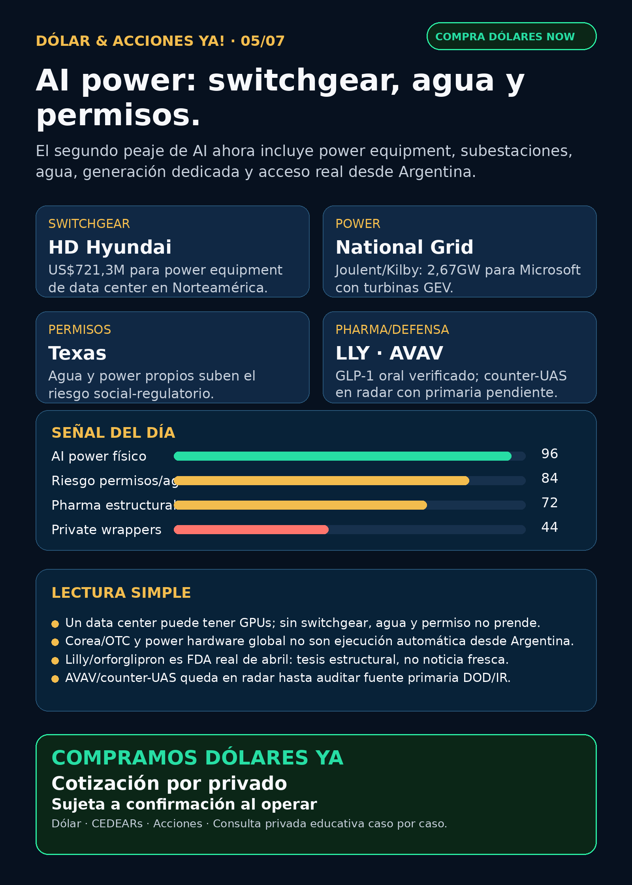

AI power: switchgear, agua y permisos.
La señal del día es electricidad física para AI: equipos, subestaciones, generación dedicada y acceso real desde Argentina.
Texto WhatsApp
Placa del día

Dólar & Acciones YA — 05/07
Lectura simple del día
La señal fuerte de hoy no es “otra acción de AI”. Es más básica: la AI está chocando contra electricidad física, agua, equipos de potencia y permisos.
En criollo: un data center puede tener GPUs, clientes y edificio, pero si no consigue switchgear, breakers, subestación, generación, agua e interconexión, no prende o no escala. Ese cuello convierte a power hardware, utilities, generación dedicada, cooling y permisos en una parte central del mapa de inversión alrededor de AI.
Para Argentina, la traducción importa todavía más: buena empresa global no significa instrumento fácil ni barato desde IOL/PPI. Hay que separar acción real, CEDEAR, ETF, OTC, broker global, liquidez, spread, comisiones y CCL/MEP antes de hablar de ejecución.
Contexto dólar usado sólo como referencia educativa, no precio operativo de broker: BlueLytics mostró oficial vendedor ARS 1.507 y blue vendedor ARS 1.515, con actualización 2026-07-03 19:45. CriptoYa devolvió 403 en la corrida nocturna, así que no publico MEP/CCL fresco de esa fuente. Para operar, se confirma cotización viva en broker/mesa.
Tesis central
El research nocturno del 05/07 refuerza una idea: el segundo peaje de AI ya no es sólo energía genérica; es power package completo. Switchgear, transformadores, subestaciones, turbinas, fuel cells, storage, agua, permisos y “bring your own power” empiezan a ser tan importantes como los chips.
Ordenado por valor educativo/de radar, no por recomendación de compra.
Señales educativas del día — no ranking de compra
1) HD Hyundai Electric — switchgear para data center en Norteamérica
- Señal: Korea JoongAng Daily publicó que HD Hyundai Electric firmó un contrato de US$721,3 millones con una tecnológica global no revelada para suministrar switchgear y power equipment a un data center en Norteamérica, con entregas por fases hasta 2028.
- Fuente: https://www.koreajoongangdaily.com/business/hd-hyundai-electric-seals-721-million-deal-with-big-tech-to-power-north-america-data-center/12751608
- Lectura en criollo: no alcanza con conseguir electricidad “en teoría”. Hacen falta equipos que cortan, protegen, distribuyen y coordinan la potencia dentro del sitio. Si eso no llega, el data center no factura.
- Instrumento global: HD Hyundai Electric (
267260.KS), mercado Corea. También mirar Hyosung Heavy (298040.KS), LS Electric, GE Vernova (GEV), Hitachi/Hitachi Energy (6501.T/HTHIY) y Siemens Energy (ENR.DE, no confundir con Siemens AG). - Accionable local Argentina: pendiente/no verificado. No asumir CEDEAR ni liquidez local.
- Estado: señal fortalecida / radar global.
2) National Grid / Joulent / Project Kilby — generación dedicada para Microsoft
- Señal: National Grid informó vía SEC 6-K que National Grid Ventures invertirá US$1.750 millones por 35% de Joulent. Project Kilby apunta a 2,67GW de generación co-located en West Texas para un campus de Microsoft, PPA a 20 años, turbinas GE Vernova y first power objetivo 2028.
- Fuente SEC: https://www.sec.gov/Archives/edgar/data/1004315/000165495426006411/a6288k.htm
- Lectura: esto muestra capital grande moviéndose a speed-to-power. AI no sólo demanda chips: demanda energía contratada, alta tensión, turbinas, grid connection y permisos.
- Proxies globales: National Grid (
NGG/NG.L), GE Vernova (GEV), Chevron (CVX), Microsoft (MSFT) y Caterpillar (CAT) como mapa de ecosistema. No todo captura revenue directo. - Argentina: acceso/CEDEAR/liquidez se verifica antes de ejecutar.
- Estado: señal fortalecida.
3) Texas / agua / permisos — la AI también compite por territorio político
- Señal: Yahoo News, citando Texas Tribune, reportó que Greg Abbott dijo que los AI data centers deben traer su propia energía y reutilizar su propia agua, o enfrentar resistencia en zonas rurales.
- Fuente: https://www.yahoo.com/news/politics/articles/texas-gov-abbott-says-ai-064900564.html
- Lectura: esto no es sólo oportunidad. También es riesgo. Si la AI encarece red/agua para hogares o industria, aparecen permisos más duros, moratorias, backlash político y costos extra.
- Proxies a estudiar:
VST,CEG,NEE,D,GEV,BE,NGG,PWR,ETN,HUBB,VRT,MOD. - Estado: vigilar / sube riesgo social-regulatorio. Falta fuente primaria regulatoria; lo tomo como señal política reportada, no norma vigente.
4) Bloom + Brookfield — onsite power para AI infrastructure
- Señal: Bloom Energy anunció que Brookfield expandió su framework para financiar power projects de AI infrastructure a US$25.000 millones.
- Fuente primaria: https://www.bloomenergy.com/news/brookfield-and-bloom-energy-expand-ai-infrastructure-partnership/
- Lectura: si la red tarda, power onsite gana valor. Pero cuidado: framework de financiación no es lo mismo que revenue garantizado ni margen asegurado.
- Instrumentos: Bloom Energy (
BE) y Brookfield (BN) como radar global. - Argentina: acceso local pendiente; si no hay CEDEAR/ETF/broker claro, queda como educación/seguimiento.
- Estado: señal fortalecida.
5) Cameco / Cigar Lake — nuclear también tiene riesgo físico
- Señal: Cameco informó por SEC EX-99.1 que Cigar Lake suspendió operaciones temporalmente por problemas en la planta de ácido sulfúrico de Orano McClean Lake; espera retorno en unas dos semanas y no ve impacto en outlook 2026 salvo demora.
- Fuente SEC: https://www.sec.gov/Archives/edgar/data/1009001/000119312526293855/d21040dex991.htm
- Lectura: nuclear/uranio sigue relevante por demanda eléctrica AI, pero el supply físico también falla. No todo cuello de botella es bullish: algunos son riesgo operativo.
- Instrumento: Cameco (
CCJ). - Estado: vigilar / riesgo operacional.
6) Pharma / GLP-1 oral — Lilly sí, pero no es noticia fresca de julio
- Señal: titulares de julio hablaban de aprobación FDA de una “pastilla de Lilly”. La verificación con openFDA/Drugs@FDA muestra Foundayo/orforglipron, NDA220934, sponsor Eli Lilly, con status
APy fecha 2026-04-01. - Fuentes: https://api.fda.gov/drug/drugsfda.json?search=application_number:%22NDA220934%22&limit=1 y approval letter FDA https://www.accessdata.fda.gov/drugsatfda_docs/appletter/2026/220934Orig1s000ltr.pdf
- Lectura: GLP-1 oral es tesis estructural potente para
LLYy presión competitiva sobreNVO, pero no hay que venderlo como catalyst nuevo de 24 horas. - Estado: fortalece tesis estructural / no novedad fresca.
7) Defensa / counter-UAS — AeroVironment en radar, primaria pendiente
- Señal: DefenseScoop reportó contrato Pentagon/Army de US$500 millones para AeroVironment en commercial counter-drone technology por tres años. La fuente primaria War.gov/Contracts bloqueó 403 en la corrida.
- Fuente secundaria: https://defensescoop.com/2026/07/02/pentagon-awards-500m-contract-aerovironment-counter-drone-technology/
- Lectura: defensa física — drones, counter-UAS, municiones, motores, directed energy — sigue como carril real. Pero sin primaria accesible no lo convierto en claim cerrado.
- Instrumentos: AeroVironment (
AVAV) y ETFs/canastas comoITA/XARsi se quiere diversificar tema. Riesgos: integración BlueHalo, material weaknesses, contratos, valuación. - Estado: vigilar / auditar primaria DOD o AVAV IR.
Watchlist base — seguimiento rápido
- RKLB: 8-K previo confirma merger agreement con Iridium. Sigue tesis space/comms fuerte, con riesgo de deuda, approvals, integración y ejecución hasta mid-2027. Sin novedad primaria superior hoy.
- NVDA: 8-K del 02/07 sobre Nicholas Parker como EVP Worldwide Field Operations; señal de go-to-market, no catalyst financiero. Moat AI infra vigente.
- PLTR: filings/ownership menores; sin señal nueva fuerte.
- TSM: 6-K por cambio de treasurer; sin señal operacional nueva. Moat foundry vigente.
- MU: sin novedad operacional posterior al Q3/HBM ya indexado.
- GOOGL/GOOG: TPU/cloud/distribución siguen como moat estructural; sin fuente nueva fuerte esta corrida.
- AAPL: revisada sin señal nueva fuerte.
- HOOD: Robinhood Chain, Stock Tokens y Agentic Accounts siguen como caso de crypto gobernado/rails y AI trading agents con guardrails humanos. No es trade de tokens.
- TSLA: Q2 deliveries/storage ya indexado; no convertir en robotaxi thesis sin earnings/regulación.
- ASML: EUV/High-NA vigente; sin catalyst nuevo 24–72h.
- Gold / GLD / GOLD / B: instrumento ambiguo. No publico precio/tesis hasta confirmar si es ETF, minera, oro físico u otro.
- RVI: Form 4 adicional muestra ventas del sponsor/Robinhood Markets; suma riesgo de liquidez/sponsor, no prueba NAV. No vender como acceso limpio a OpenAI/SpaceX.
- DXYZ: hype por SpaceX/OpenAI/Anthropic sin NAV/premium actualizado en esta corrida. No elevar como oportunidad sin fact sheet/filing/liquidez.
- CBRS: sin señal operacional nueva posterior a OpenAI/AWS/Q1; mantener concentración de clientes, capex y valuación como riesgos.
Portfolio/base Mi Simulación
La cartera de Ricardo fue liquidada, devuelta y terminada según corrección de Charly del 24/06. No hay posiciones activas ni P&L real para reportar. Este radar opera como vigilancia para próxima decisión humana o nuevo inversor.
Energía y capa Argentina
- Tesis central: power hardware, switchgear, transformadores, subestaciones, fuel cells, turbinas, storage, agua y permisos.
- Energéticas argentinas:
YPF,PAMP,TGS,CEPUrevisadas; no apareció señal primaria nueva superior. Siguen como radar educativo local por Vaca Muerta, gas, generación, tarifas y red. - En criollo: una utility puede capturar demanda eléctrica, pero también carga deuda, capex, regulación, tarifas, permisos y riesgo político.
- Antes de ejecutar desde Argentina: chequear CCL/MEP, spread, volumen, comisiones, ratio CEDEAR si existe, parking/liquidación y si el ticker opera realmente en el broker.
Pharma / salud
- LLY / Foundayo-orforglipron: aprobación verificada, pero de abril. Estructural, no fresco.
- NVO / Wegovy oral: sin catalyst nuevo superior en esta corrida; seguir pricing, cobertura, competencia y approvals.
- AZN / oncology: RSS/Yahoo mencionó aprobaciones EU, pero sin EMA/AstraZeneca primaria final en esta corrida no lo elevo como claim.
- PFE / MRK / AMGN / REGN: revisados; sin señal clínica/regulatoria nueva fuerte.
Defensa, space y physical AI
- Defensa/guerra física:
AVAV,GE,RTX,LMT,NOC,GD,HWM,KTOS,BA,ITA/XARrevisados. AVAV tiene señal secundaria fuerte; falta primaria DOD/War.gov o AVAV IR para cerrar. Carril sigue en radar. - Space/orbital AI:
RKLBySPCXrevisados. SpaceX/SPCX sigue radar alto, pero no accionable automáticamente sin precio vivo, float, liquidez, broker/acceso y riesgo. - Autonomous mobility / physical AI:
TSLAtuvo entregas/storage ya indexado; Waymo/Alphabet, Zoox/Amazon, Uber y Joby revisados sin señal primaria nueva fuerte en esta corrida. - Fintech / AI trading agents:
HOODsigue como caso educativo: agentes financieros con ledger, límites, paper/read-only y aprobación humana; red flag si prometen autonomía y rentabilidad sin controles.
Red flags / hype para ignorar
- “AI power” como excusa para comprar cualquier energética sin mirar deuda, permisos, valuación e instrumento.
- Presentar US$25.000 millones de Bloom/Brookfield como revenue garantizado.
- Vender Corea/OTC como si fuera fácil desde Argentina sin broker, liquidez, moneda y spread.
- Tratar stock tokens de HOOD como CEDEARs o acciones locales.
- Vender RVI/DXYZ como “comprar OpenAI/SpaceX limpio” sin NAV, premium/descuento, liquidez y acceso.
- Publicar Lilly/orforglipron como aprobación fresca de julio cuando la FDA marca abril.
- Decir “contrato AVAV US$500M confirmado” sin primaria DOD/AVAV accesible.
- Hablar de Gold/GLD/GOLD/B sin instrumento exacto.
Qué mirar después
- Primarias de HD Hyundai Electric, Hyosung, LS Electric, GE Vernova, Siemens Energy, Hitachi Energy sobre orders/backlog de switchgear, transformers y subestations.
- Documentos oficiales de Texas/PUC/ERCOT/PJM/DOE sobre data centers, agua, grid y bring-your-own-power.
BE: cuándo el framework Brookfield se convierte en proyectos/revenue verificables.- AVAV: capturar DOD/War.gov o AVAV IR para cerrar el contrato counter-UAS.
- RVI/DXYZ: NAV actualizado, premium/descuento, sponsor sales, liquidez y acceso Argentina/USA.
- Próximos earnings/catalysts: Tesla 22/07, semis/memory, utilities y pharma/GLP-1.
Servicio privado
Dólar · CEDEARs · acciones · consulta privada. Si querés comprar o vender dólares, invertir en acciones o pensar una estrategia financiera más personalizada, escribime por privado y lo vemos caso por caso. Cotización sujeta a confirmación al momento de operar.
Disclaimer
Esto no es asesoramiento financiero personalizado ni una orden de compra/venta. Es research educativo para decisión humana, con fuentes verificables y riesgos explícitos.